Projects


Website for all of Penelope's documented work in ENGR11A
This website will be used to document and hold pictures of most of the projects in ENGR-11A. This website was made by Penelope Llibre, a student in ENGR-11A's first semester being offered.
Click on the images in the projects section to see different projects and write-ups!
The first majro task of the semester was to build a Prusa Mini+ in pairs and document the journey. Once finished, a Benchy 3d Model was printed as a benchmark.
The first steps of the handbook outline all of the resources you may need - for example, it highlights which tools are needed, shows how to use the part "cheatsheet" that came with the printer, and gave several ways to reach out to support. This part was useful in preparing the setup as it helped keep things organized.
The professors of the course also made it a point to organize all the pieces in the box before attempting to build the printer. This helped making look for pieces substantially easier and it meant that it would be harder to lose pieces or mix pieces with the other groups.
 All of the pieces laid out
All of the pieces laid out
The first steps - steps 6 through 10 - were very easy and just involved recognizing which parts are the XYZ-axes, in addition to placing foam blocks on them. Step 11 and 12, connecting the LCD cable, proved to be a little difficult. Placing the LCD cable was hard because it was in a particularly tight corner, meaning that one's fingers wouldn't reach completely in the box. Additionally, the hole one feeds the LCD cable through was not in place with where the cable was. This meant that I had to bend the LCD cable at a 45 degree angle to get it in.
Steps 13-18 involved joining both the Y and XZ-axis together. The connection was formed by screwing them together using M3nE nuts, which can be found on the machine. They are shown in the picture below, on the left.
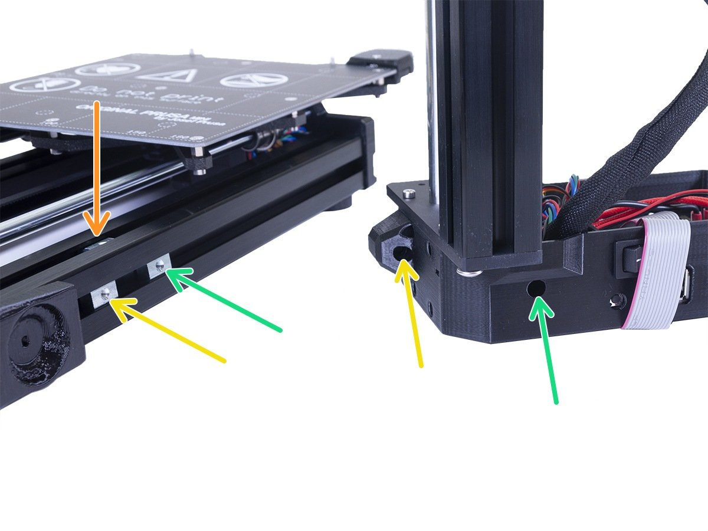
This was the step we got the most wrong. The instruction manual doesn't give an exact picture or instruction on where to place the M3nE nuts; it only says "Place the right M3nE nut approximately in the middle of the extrusion length, but make sure it is not under the heatbed structure." This made it so that we ultimately placed it too far back the first time and then too far back the second time.
Aside from that, joining the parts together and screwing them in was fairly easy.
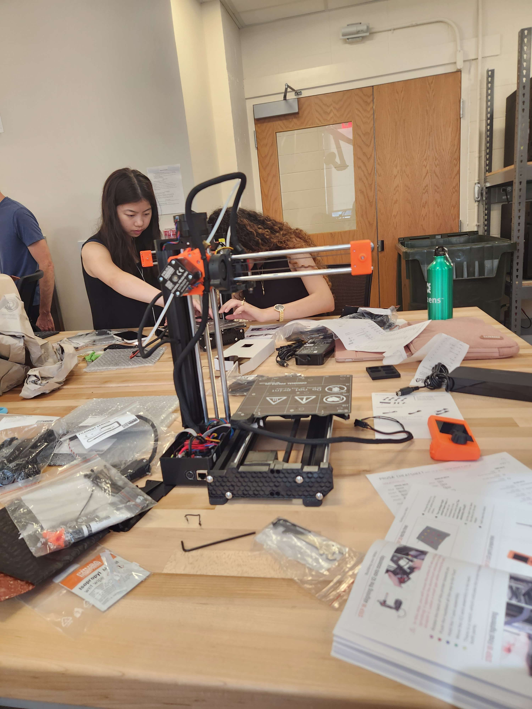
Steps 20-22 had to do with the LCD screen. Setting it up and getting it mounted onto the printer was very easy, and there's not much to comment, save for one important problem.
Because of the aforementioned problem with the M3nE nut, the LCD was placed too far forward at first. When running calibration, the nozzle and the Y-axis actually ran into the LCD screen, preventing it from moving a far down as it should have. This was fixed by later moving the M3nE nuts.
Steps 23-29 dealt with the cables and other electronics, such as the filament sensor. Connecting the cables was easy. My partner struggled with them initially, but the printer uses multi pin connectors, which computers also use. I have experience putting together PCs, so it wasnt too difficult to put them into place. I'm sure my partner would also have gotten it if given enough time.
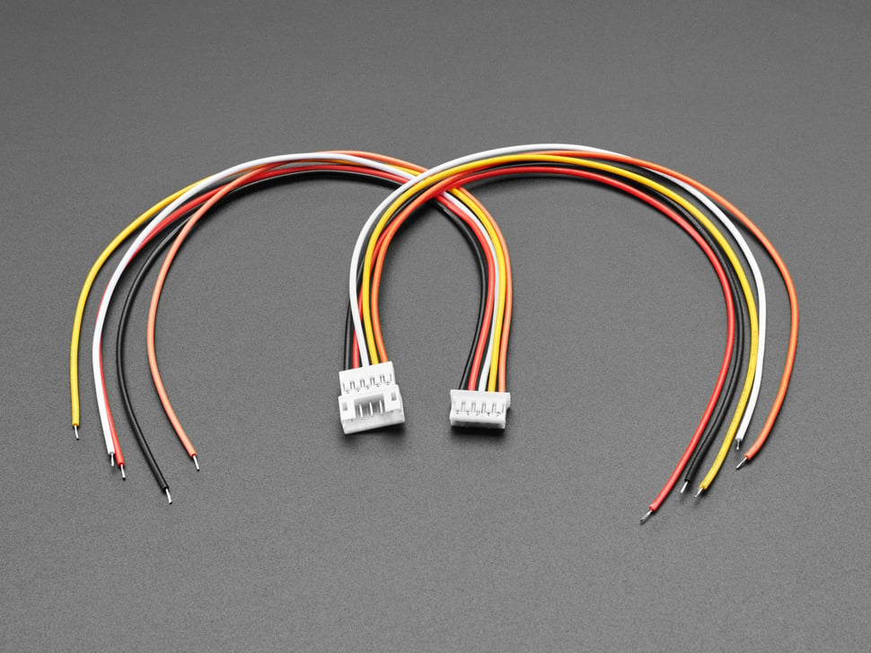
Not the same exact cables, but a similar style
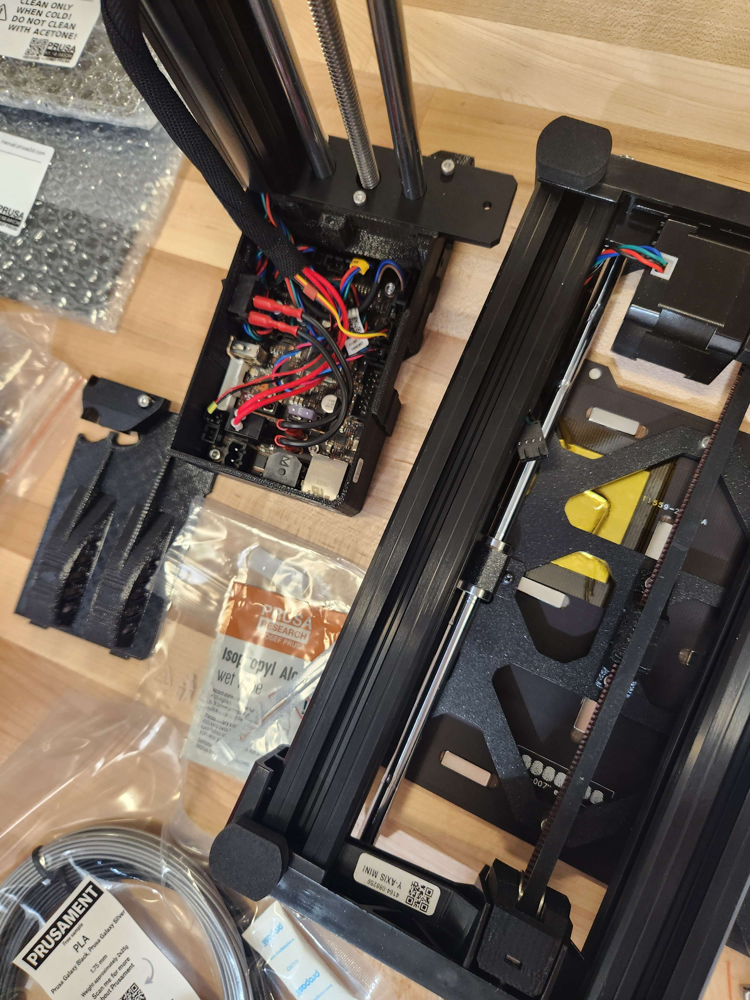
Steps 31-36 dealt with assembling the spool. This was, by far, the easiest part of the whole process. This is because one did not have to bend their fingers around corners, deal with cable management, or anything more complicated than screwing screws and bearings into place.

The final two steps, 38-39, involved connecting the power supply and the PEI MINI sheet, which is the surface where objects are 3D printed.
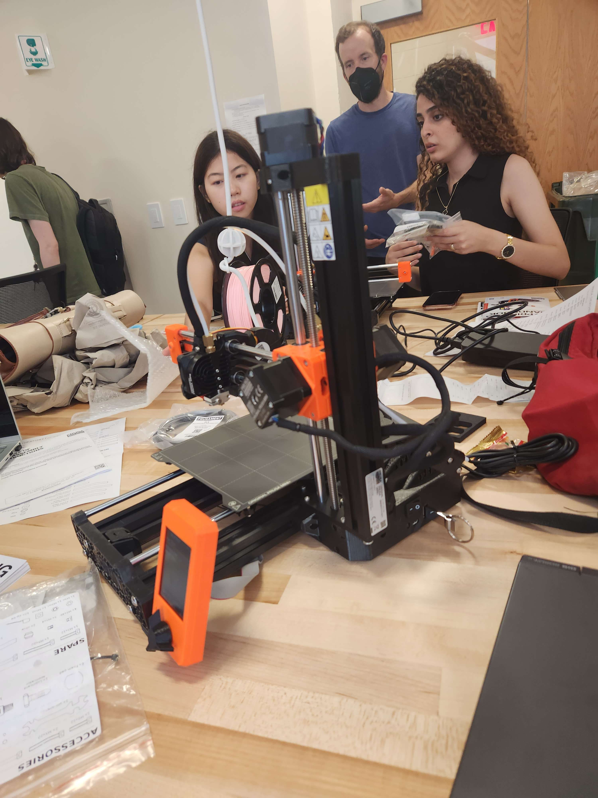
Benchy 3D Model
Due to finishing the Prusa Mini+ right as class ended, there wasn't any time left to calibrate and make sure it was printing correctly. Because of this, the Benchy was printed next class. The goal of the second class was to print the Benchy as fast as possible - my pair and I opted to do this by reducing the size. This resulted in a print of about 30 minutes.
Seeing as this gave us ample time to print a regular sized one as well, one was also printed with an increased z-axis layer size. This reduced the detail of the benchmark, but it succeeded in getting it print in under an hour.
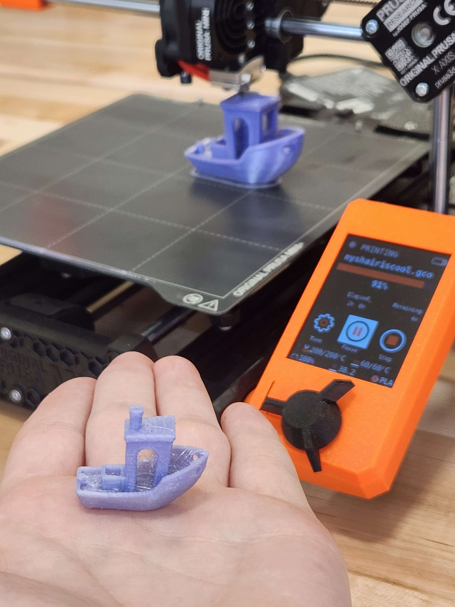
Seen on the smaller benchy clearly and also present in the actual benchy in the background is a large amount of stringing. We were told that it may be because the filament chosen has a high amount of moisture. While that may be the case, switching the retraction settings, notably increasing the retraction speed, and turning on a setting specifically made to reduce stringing helped greatly in future prints, though it was not eliminated entirely.
In future projects, I have made some further efforts to help with any errors. For one, I run the first layer calibration before starting a print on a printer I haven't used before. Additionally, I've begun wiping down the bed with the alcohol wipes that came with the Prusa Mini+. This eliminates any oil that may be left from touching the heat bed.
Concluding Thoughts
A lot was learned from this process. Since I had not thought about it much, I assumed that 3D printers were very much a "plug n chug" device that did not require calibration. Though there has been leaps and bounds in recent years in 3D printer technology, it still requires a lot of attention, especially when it comes to printing settings. Because of this, some view it as a different form of art - one that requires experience and creative thinking to approach.
Something I further explored after this was the amount of detail the printer could ouput. This thought came as a result of the mini Benchy that was 50% the size of the larger one. I still don't have enough experience to be able to definitively say so, and in the future I would like to mess around with settings more, but for now, it seems as though FDM printers may not excel at detail at a small scale. This is also what I managed to find online. I printed a very small miniature to test the limits of the printer, and though the limits are clearly visible, it managed to make the figure somewhat distinguishable. Given that it produced this when I scarcely tinkered with the settings, I would say the printer doesn't fail on a minute scale either.
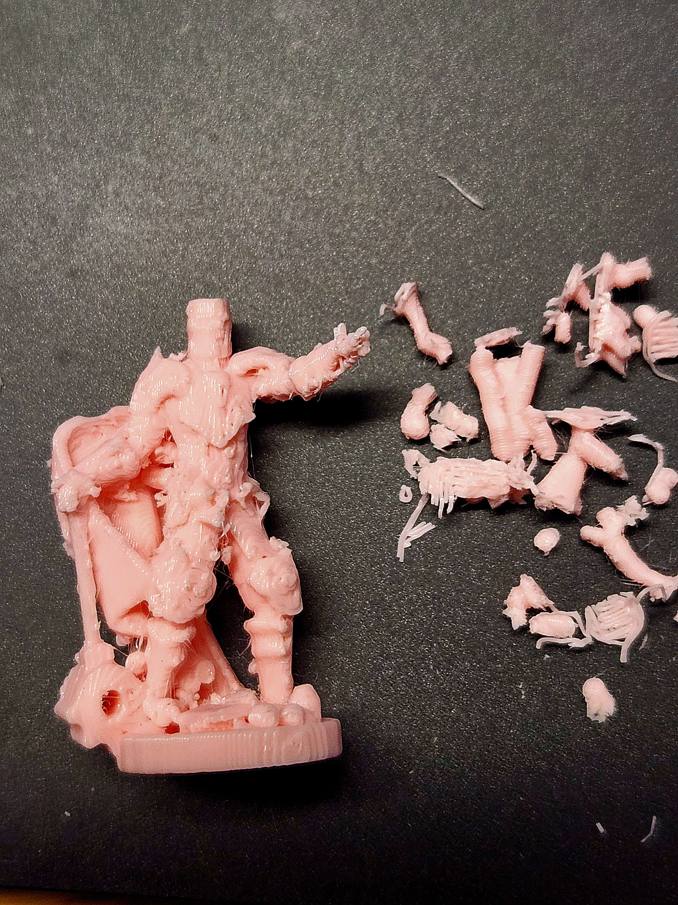
Project 2 consisted of remixing an existing design or mixing two together. I decided to put together these two designs;
https://www.tinkercad.com/things/hsidgKbdRPl-dice-jar
https://www.models-resource.com/pc_computer/zootycoon2/model/16507/
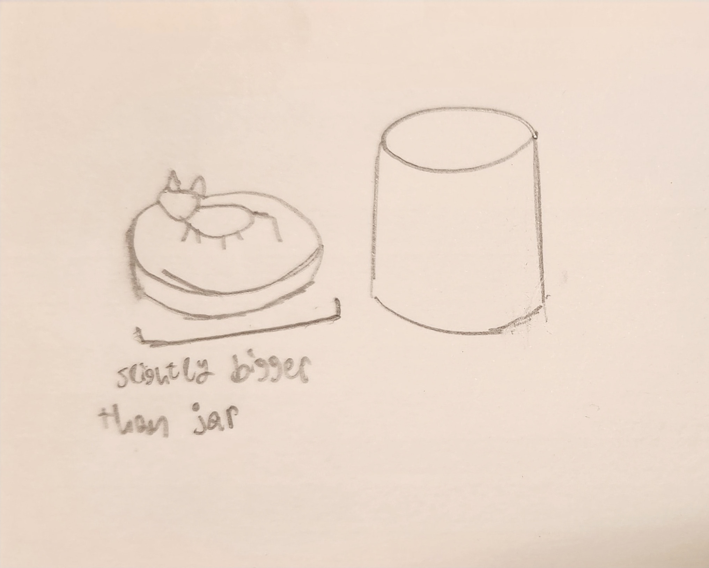
I would have liked to sketch the dimensions to get a more accurate measurement of how to make the lid bigger, but I couldn't use TinkerCAD to take precise measurements. In the future, I plan on using Fusion360 to be able to sketch and plan things better ahead of time. However, this did present a unique opportunity to print with a more "feel-based" approach instead of trying to be analytic. This would be useful later when I 3d printed an elbow joint - though not included here as it was more for practice than for this project, it was helpful because you almost have to guess (at least at first) how much smaller to make a pin than the hole it goes into.
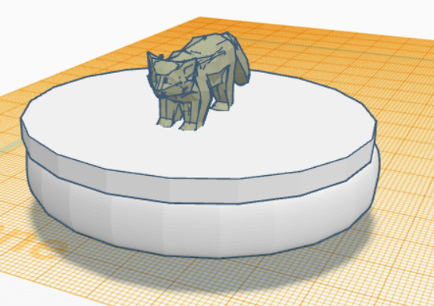
The jar stayed the same for the most part, but I redid the lid, shown in the picture above. There's some things to note; for one, the original lid wasn't made that well in TinkerCAD. Essentially, the lid that came with the original Dice Jar design had a hole in it that I did not notice until I 3d printed it;
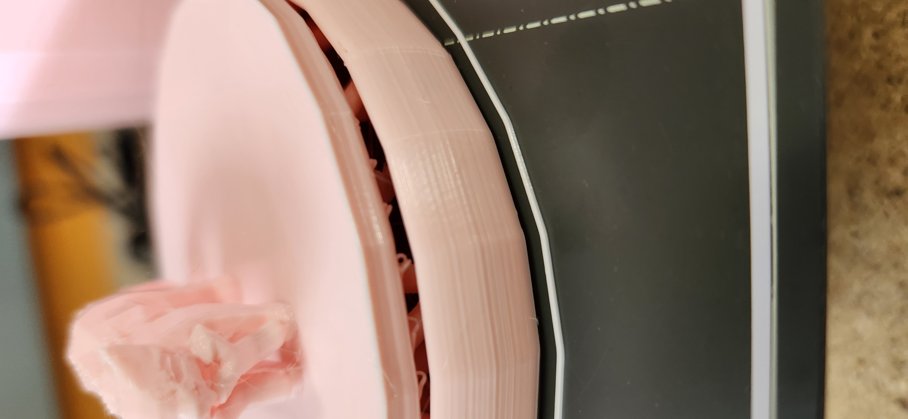
That being said, there were some preemptive measures I attempted to take. Some peers had experince with TinkerCAD trying to print things in midair. To remedy this issue, I almost sunk the figure in a bit deeper into the lid to make sure that it would stick. I also made sure to use the "hole" tool to encapsulate any bits left midair, one of which existed due to me bending the tail of the red panda.
There was something else, though, that affected my final print, and it actually came from the concept phase. When finding 3D models, I obtained one from a video game called Zoo Tycoon 2, released in 2004. As you can see in the TinkerCAD model picture previously, this resulted in a really polygonal and blocky panda. Video games, especially old ones, have restraints when it comes to the amount of polygons they can use - in fact, most of the depth comes from the texture files that are applied to the models. This means that they aren't always the best choices to 3D print, as video games have to use a lot of tricks to conserve memory usage.
Above is the picture of the finished print. Another thing of note is how the lid was oriented to print. Normally, I could print this lid without supports - imagining the red panda isn't there, I would flip it 180 degrees and it would be almost entirely hassle-free. However, the inclusion of the figurine makes this option a bit less desirable - analyzing it in Meshmixer showed this to be the best orientation. Regardless, there is also the problem of supports being printed onto and around the figurine that could make it difficult to remove without accidentally messing with a piece.
If I did this project without the specific guidelines of needing to combine two objects, I would print the figurine separately and glue it on - I feel like there would be less room for error there.
That being said, a place where I found success was in changing the support settings and making them easier to take off. I achieved this by using a 0.4mm offset in the support settings, which made them much less resistant to being taken off. Additionally, I later made the diameter larger and would manually remove them in order to remove unnecessary supports.
One thing I could have done to increase the detail in the figurine is to lower the layer size. It likely would have come out looking better, but it increased the time by a lot. I ended up not doing this because it would have reduced the layer size for the whole lid - I am not comfortable modifying g-code to change printer settings midway through just yet, but it may be an option in the future. Something else that came up is that the lid would also not fit very stable on the jar - it would not squeeze on, and it would pop out very easily.
There are several ways to address this. One unique way may be to use a more flexible material that doesn't resist bending as much - it would almost be like a tupperware lid. That being said, it would be best to prototype this solution with PLA and ensure it is the right size beforehand.
Another solution is to simply make the lid larger. PLA tends to change while cooling, which can make parts that are supposed to fit perfectly not do that. By making the lid 5% or 10% larger, I would be able to ensure that it stays on - it may take a fair bit of experimenting to get it just right, though, and it would be worth thinking about how to expedite this process so it doesn't take 5 hours to print each prototype. One possible way of doing is would be to just print a very small cross-section of the lid without the figurine and all of the lip part of the lid. In the future, I will be sure to prototype more before committing to a whole print.
The goal of the alarm clock project was to learn how to solder and create an item in Fusion 360 that would fit the measured dimensions of the circuit board.
The first step of the project involved soldering the circuit board to get the alarm clock to function. My partner and I followed multiple steps when soldering. Once heated, we would put a good amount of solder on the tip of the iron while continuously cleaning it. After this, we would place the tip near the area we wanted to solder. We would feed solder into the area and, once it seemed like there was enough, we would lift the tip to create a peaked shape. Some pictures of these steps are included below;
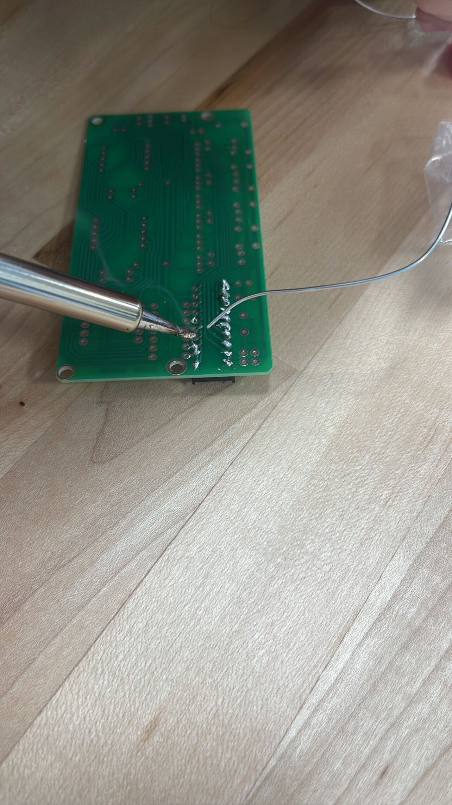
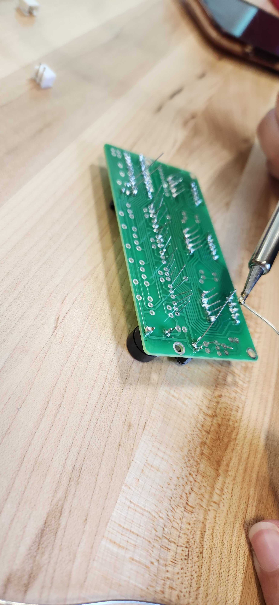
There were two problems we experienced, which were at complete opposite ends of the spectrum - too much solder and not enough solder. The first time around, my partner wasn't using enough solder. This is because they were using another method as opposed to the one described above. They would put solder on the tip of the iron away from the circuit board, then bring it close and try to "paint" it on. The second time around, I tried to overcompensate for the amount of solder and ended up putting too much on some, which meant that the soldered points would reach up a bit high. We managed to fix this.
Our first circuit didn't work due to a burned point on the board. Though we attempted to fix this, what we ultimately did was solder another board. The second board did work and gave us almost no problems - the only issue we had was forgetting to place the chip in, and that was easily resolved.
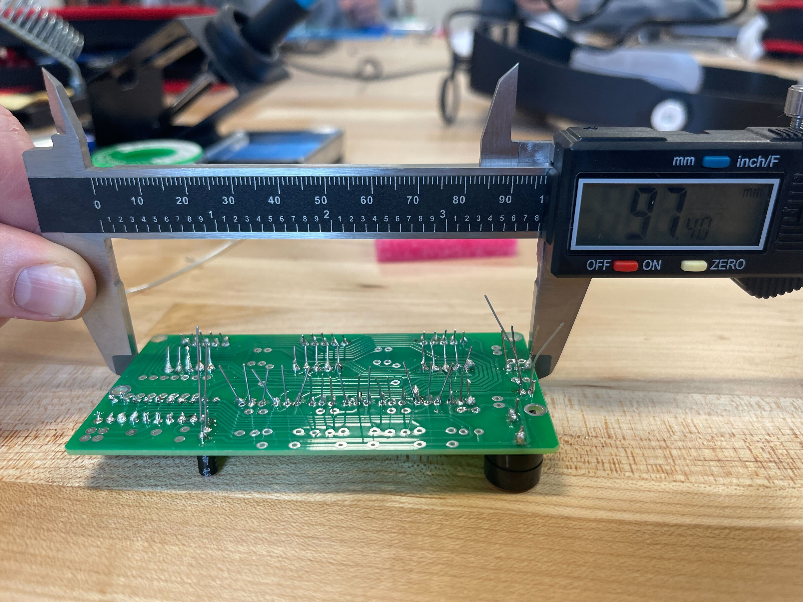
The second step in this project was to measure the circuit board in order to make measurements. Using digital calipers, some measurements were taken, such as: the width between the buzzer and buttons, the width between the displays, the length, height, and depth of the circuit board as a whole, and more. Here is a diagram showing some of the measurements taken;
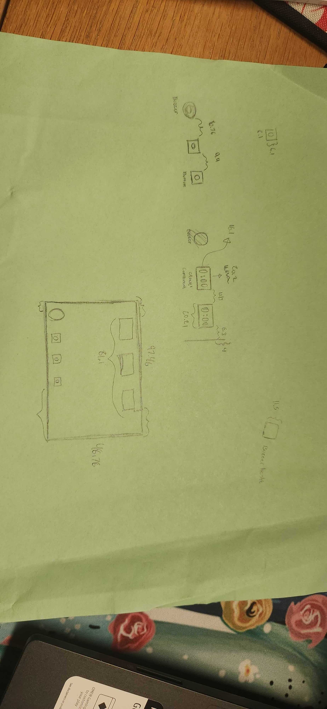
From there, we tried to translate this into Fusion 360. At first, we created a simple box just to make sure we had the correct measurements.
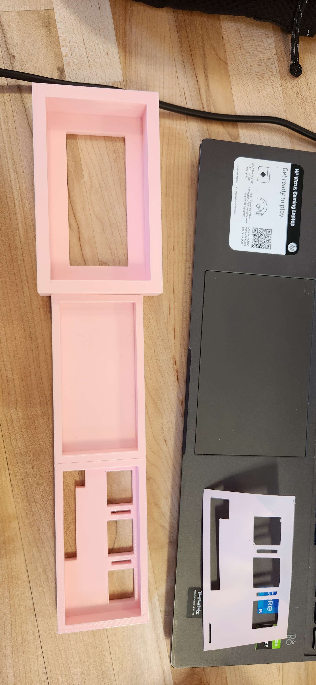
These are some of the early prototypes we used before finishing up with the final version. The idea of the box was to have a front face that could fit into a back container. The top-most piece was an early version of the back. Originally, we were trying to decide whether the circuit would face the bigger piece or the smaller piece (which is why the back lid has a whole in this version). Eventually, we decided it would be easier to take measurements for the smaller piece since it almost exactly fit the circuit-board. The second piece was to see how the circuit board would fit if the larger lid was the face of the alarm clock.
The third piece down is an attempt at bringing the measurements from paper to real life. It didn't match up as well, but with some minor adjustments, we got it to where it is now. Finally, the bottom right piece was made with these adjustments. I realized that I didn't need to print the entire box, so I only printed some layers to see if it lined up well.
The slicer settings were kept the same as they were on the Prusa Slicer 0.20mm QUALITY default settings with the exception of adding organic supports. This ended up working fine.
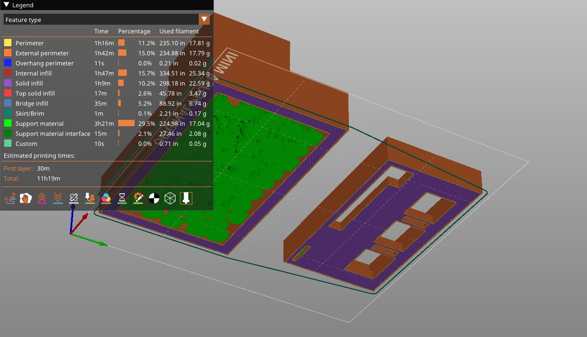
Our final product looks like this. It has a hole at the back to allow the battery to be plugged in. It's a very simple fit, and not extraordinarily tight. Something I would like to experiment more with in the future would be a system to attach the object. Whether through a hook and rod or a pin-slot system, it would be interesting to have a more secure fit. An alternative would have been combining these two pieces and instead making a hole in the top; this way, one could make a "lip" that can be lifted.
This project involved the creation of the e-NABLE Prosthetic Hand. In this case, my partner and I 3D printed and assembled the v3 Phoenix hand. The first step was 3D printing the hand - in this case, a combination of a Raised3D E2 and Prusa Mini+. After that, we assembled the hand. The final step was testing it and adjusting.
Before beginning anything, my partner and I viewed a video and text guide on the process. The video guide provided a step-by-step process with words over actions. It managed to capture the more detailed actions, such as running the fishing line through the gaps, really well. The text guide provided images and numbered steps. It broke down some steps to make it easier to visually see.
The video was the most helpful - the fact that we could slow it down and see the steps being done exactly as the creator intended made it very easy to understand. The written guide was also helpful, but in a different way. It allowed us to go ahead as fast as we wanted to and it didn't over-explain things that we already had an idea on how to do. This is honestly the biggest difference between the two; the text guide allowed us to work quickly and get the first couple of steps done quickly without needing to skip around in a video, but the video broke down steps that the guide didn't explain to the detail we needed.
Finding the files and documentation was as easy as searching up "e-NABLE Prosthetic Hand Phoenix V3," which is a lot of words, but it gets you there! The only thing I would change is making the text document go over how to insert the strings more clearly - perhaps a cross-sectional diagram would help.
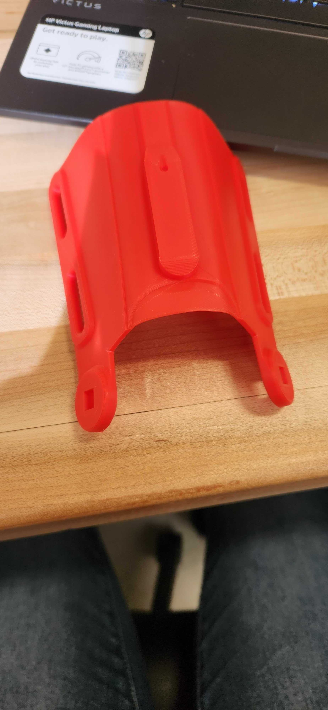
The first step in assembling the hand we did was forming the gauntlet. We thought it'd be easy to prepare everything beforehand so we wouldn't need to break up the assembling process later. At first, we tried using warm water, but it didn't work at all - we ended up using our TA Vincent's device and a heat gun to heat up the plastic and form it using a mold. After this, we ran it under cold water so it would hold the shape.
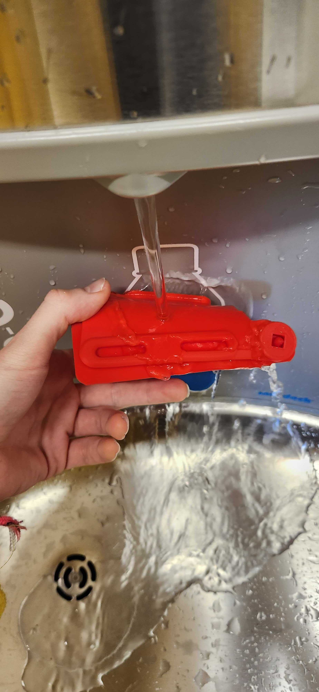
After this, we built the fingers. To do this, we first assembled each finger by putting a pin through the knuckle. Then, the fingers were held up against the palm's holes and another pin was put in. Finally, rubber bands were attached that held the fingers up instead of letting them move around.
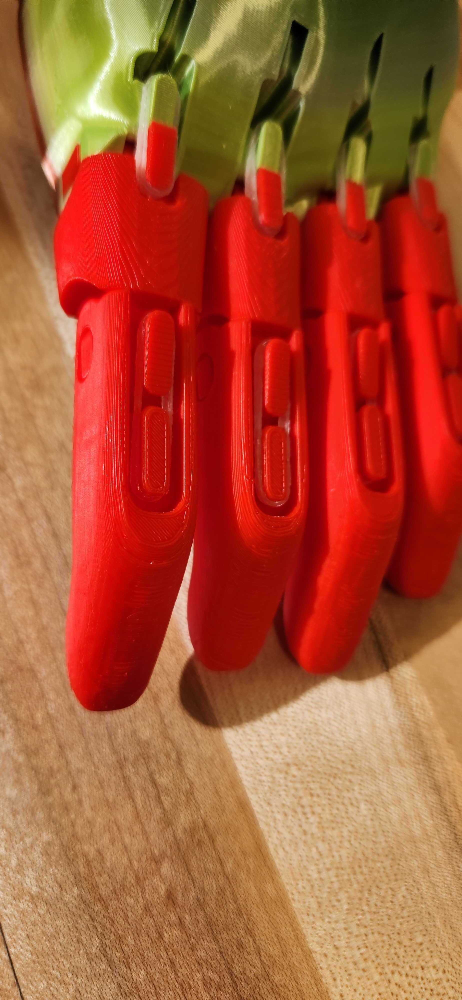
The step after involved tying a fishing line to the finger, running the line through the palm, then tension cord, and finally to the next finger and tying it there. This step was a little tricky to figure out because knowing which hole to put it in (there were 2) was difficult due to the text guide not being as helpful as we would have wanted it to be in its images. The first fingers we did were the pinky and ring finger; the picture is of them being pulled.
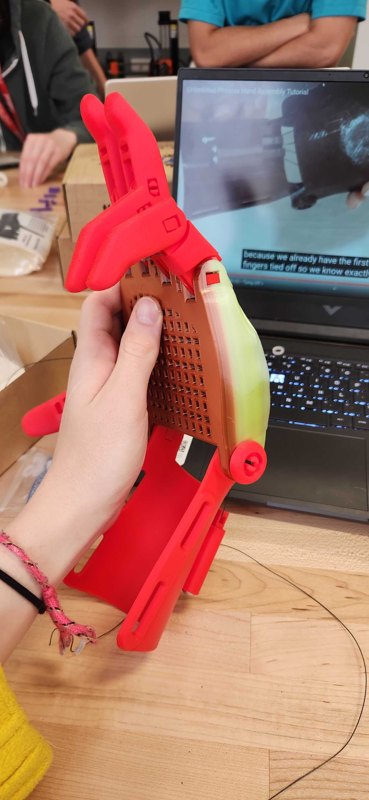
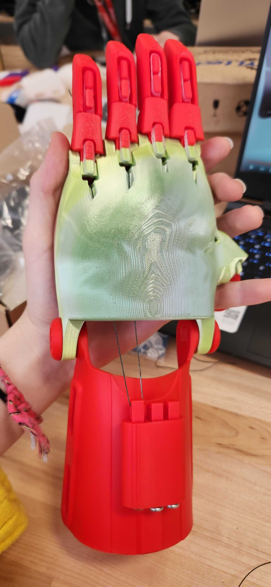
When repeating the process for the index and middle finger, I actually did things incorrectly and the strings ended up on top of the palm instead of going through it. To fix this, I had to cut the wire and untie it, which took some time. In the future, I'll have to make sure that the knot I'm tying is actually supposed to be there before tightening it and looping it 5 times over.
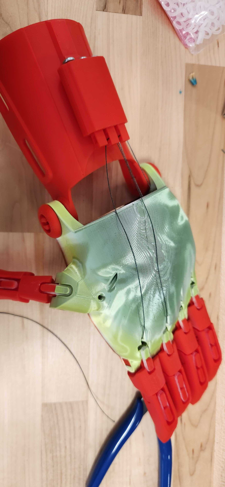
After tying the thumb, the hand was complete.
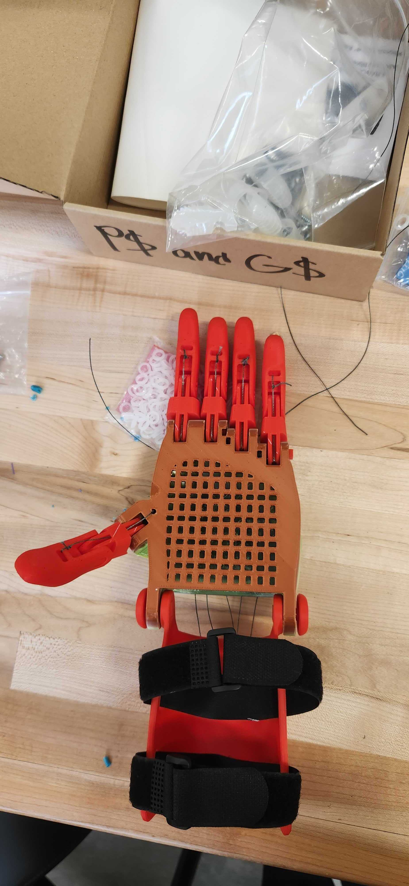
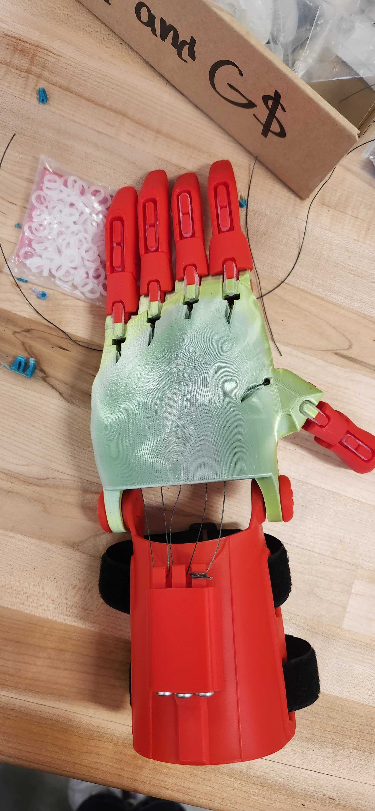
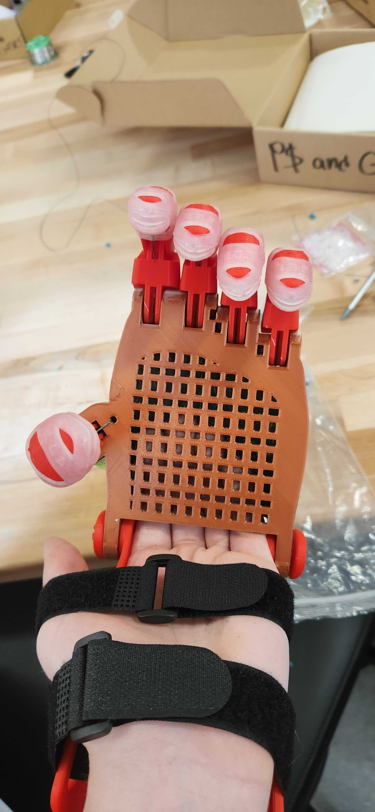
The hand works by pulling the gauntlet down, which then tightens the string and stretches the rubber bands. Due to the string pulling the fingers, the fingers curl and grasp an item. In order to mimic how a real hand grasps things, I tightened and loosened the screws on the tension bridge until the hand grasped things pinky and ring finger first, then index and middle finger, then thumb.
Overall, this project was very helpful in learning how to combine 3D printing with more traditional forms of assembly. I've always thought that 3D printing would be best when combined with mass-manufactures nuts, screws, and bolts, and it was great having the opportunity to explore that. I really hope to see future engineering projects or even courses utilize similar methods seen in this project.
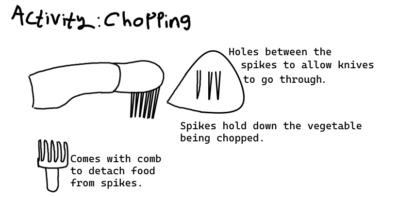
The first step in the project was to sketch what we would be cutting and try to match the dimensions and transfer it to fusion. Most of the measurements were made in the previous project and adapted from the previous project in fusion - that being said, most of them were checked using digital calipers just to be certain. I also rounded my numbers to whole numbers this time around since I didn't think it would make that much of a difference. In the future, I would keep things more precise, at least within one decimal point, but I knew that if I rounded up the circuit board should fit and I could possibly account for kerf at the same time. Below is my sketch;
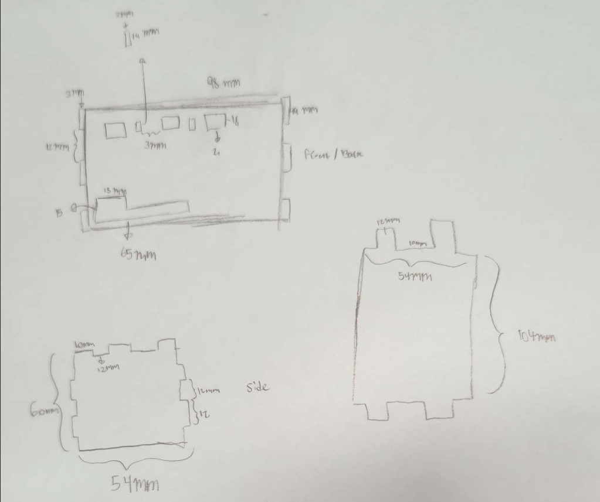
Something to note is that I separated the pieces after making them in fusion (as opposed to keeping it all together in one box). This was to make the sketch process easier so I could export them as DXF files. It also helped me visualize how the box was going to come together better. I found that when all the parts were put together, it was hard to tell which part had which joints.
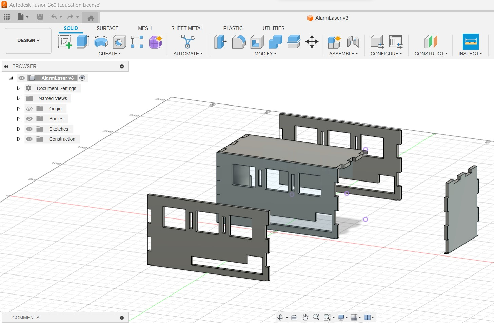
One thing about the design that made it easier is that I adapted the alarm box design from the previous project. I did this by creating sketches on top of the already existing parts and creating new ones. The reason I did this is because there were some lines that were causing problems on the original design - by creating a new sketch, I "cleaned up" the design.
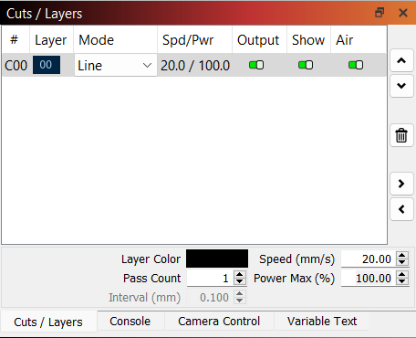
These are the settings used; 20 mm/s speed and 100% power. This was found to be the best setting to cut completely through the plywood consistently. This was based off of testing done by the professors and TAs.
Cutting the Box
Once the box was cut, these were the pieces obtained:
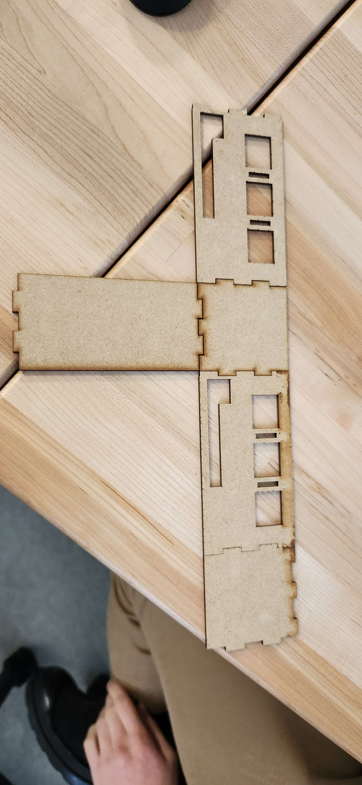
Because of the kerf (the excess material the laser burns off as it passes through), the pieces were kind of loose. This meant that it was really easy to all slide together, as shown in the picture, but it was also incredibly easy for it to fall apart.
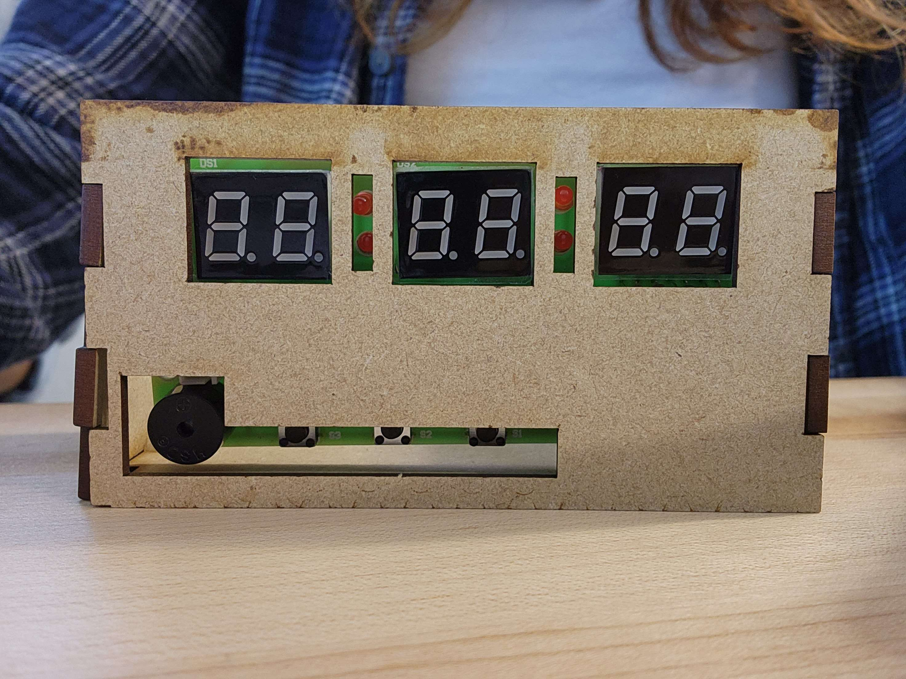
The measurements were, for the most part, correct, though. This meant that I could prioritize strengthening the joints. This proved to be tricky - some joints would be impossible to laser cut, and because of how thin the material was, the normal finger joints used weren't as effective as they potentially could have been.
At first, I tried to make a dovetail joint in fusion. After watching a tutorial, I managed to do it successfully, but there was a major problem I didn't account for. Because of the angles, there was no way to laser-cut dovetail joints. Another type of joint I wanted to try, a mortise and tenon joint, was also impossible to laser-cut due to the fact that the tenon would have to be a smaller thickness in addition to the need to cut a hole through the wood it would go through.
I opted to keep things simple and simply make the two cube walls slightly taller to make it harder to take apart;
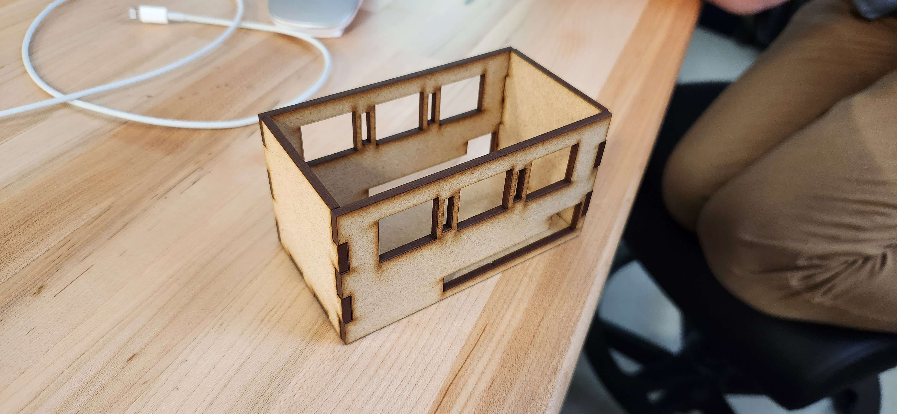
At first, I made it too tall, so I filed down some of the parts and got them to go in. It was a lot more effective, but if it fell, it would still break into pieces. The way to solve this would likely be to try other types of joints. Because of the thinness of the material, I am not entirely convinced that simply longer joints would work or look good, but I would like to test it before entirely discrediting it. Another option to solve this problem would be to simply use glue. I opted not to since I felt as though it would go against the spirit of the project and the class, which is trying to do one's best within given constraints.
The first part in this project was to define what we wanted our clients to look like - essentially define our customer profile. We defined our client as preferably being someone who had a cat with impaired movement that would be solvable through 3D printing, particularly through a wheelchair as we felt that that approach would be easier than designing and fitting a prosthetic leg that the cat may reject. Over the course of the day, the device would allow the cat to move without impairment in a way better than if they didn't have the device. This could be by allowing faster movement or by preventing possible diseases, such as scoliosis. Professor Ian suggested a Brandeis alumni who works as Tufts; we thought that even if they didn't have a client ready, they would be able to direct us in the right direction.
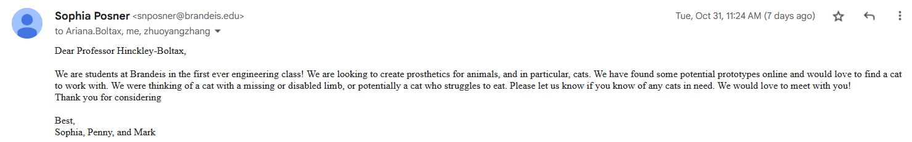
Our email template was first drafted between us. We then asked chatGPT to help us write an email and we combined aspects of the two to come up with the email sent above. Some of the questions we asked were:
How feasible is it to do a cat prosthetic within the span of a month and a half; are there other assistive devices you feel are needed in pet-care; what pros does 3D printing bring into the field of vetenary care; and would we be able to find a client, or would we be donating a generic item or "prototype."
These questions spurred a lot of good conversations on how likely it is that a cat prosthetic could be done, and the answer was that it would be a lot more likely finishable and effective if we focused on assistive devices in general. Some problems suggested were giving animals shots and putting them into carriers, and the one I suggested - a bailey chair for animals with megaesophagus - was also seen as an interesting topic.
We will likely schedule a future meeting when we have a prototype for the bailey chair done. For now, we have been keeping in touch through email correspondance as we feel like most of the things we have to present don't require both parties to block off 30 minutes from their day.
One of the Design Thinking Methodologies we used was "Need Statements." We started off with the statement "____ need a way to _____ so they can ____." We wrote in the following:
And then grouped it into:
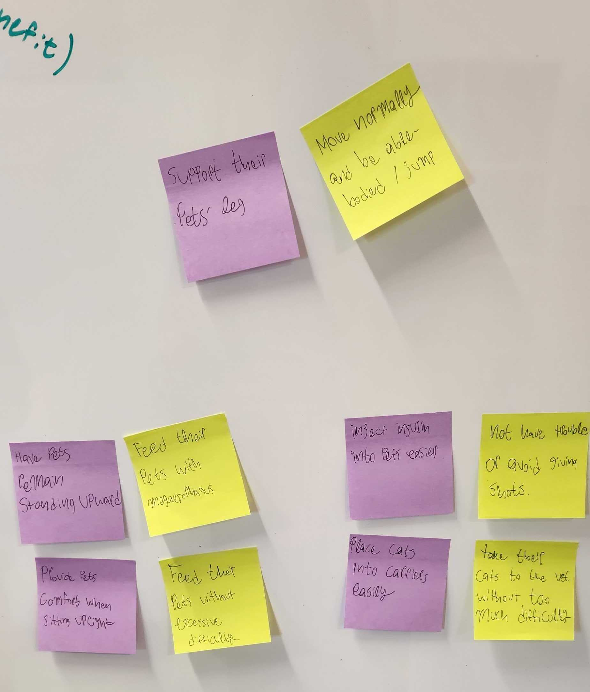
We found that the ideas could be categorized into one of two ideas or a mix of both.
1. Things that make the lives of cats easier.
2. Things that make the lives of pet owners easier.
3. Things that make the lives of both parties easier.
We decided to go with the feeding pets idea because it seemed the most attainable. The other solutions are described further on. The other Design Thinking Methodology we used was the empathy map;
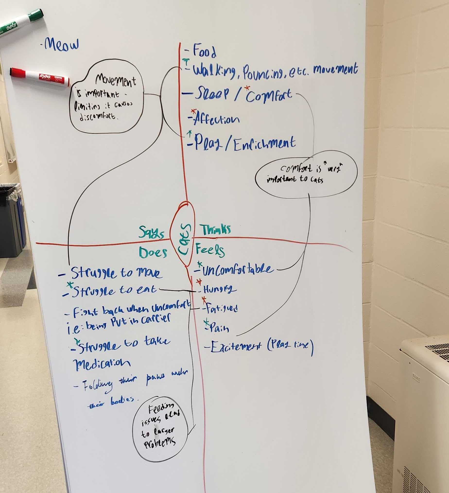
We wrote in for each box and then grouped them into common threads, as seen. We later came up with 5 solutions.
Solutions
1. Insulin pen; One thought was that pet owners struggled giving their pets shots due to being afraid to give them or the animal making it difficult. One product available on the market is a device that automatically gives shots if you put the needle in with the syringe. This idea, though wonderful if it could be made perfectly and cheaply at home, isn't the greatest idea because if it goes wrong, it has the potential to cause a pretty decent amount of harm, possibly to the point of needing urgent care.
2. Assistive needle device; in a similar vein to the problem above, this device sought to make giving shots easier, but instead of having a pen automatically do it, it could simply hold a person's hand steadier. This idea was abandoned for similar reasons.
3. Assistive oral pill administration; this idea had a lot less possibility to cause harm to the animal. This is a common problem faced by pet owners who have to give pets oral medication. The only downsides are that 3D printable materials aren't often transparent, making it difficult to see where the pill is or how close it is to going inside, and pill poppers themselves are already fairly cheap ($6.99 on Amazon). It's difficult to see someone 3D printing this instead of just ordering it online, but a 3D printed syringe is an interesting idea.
4. Pet carrier transfer; the biggest problem faced by pet owners, particularly cat owners, is often putting them in carriers. It's to the point that cats are much less frequently to be taken to the vet not because they need it less often, but because pet owners don't want to deal with the hassle. This is a project that really caught my interest, but it's difficult to see something of value created within a month and a half. Not only is it difficult to think of ideas that could be laser cut or 3D printed, but there's issues when it comes to humane animal handling and such.
5. Bailey chairs; the original idea, bailey chairs help animals with megaesophagus sit upright when eating so that the food is pushed down through the force of gravity. This is the one we're going to go with since it's really simple to make and provides a decent level of value. There's also no STL files for a bailey chair online, so it's open-sourceable.
We don't have a specific client, so we will be approaching this from a more philanthropic viewpoint and give different size bailey chairs to a veterinary clinic. We will also be posting the files online, and we could potentially make a guide on how to measure the correct dimensions for the dog/cat and line the chair with foam to make it comfier for the pet.
In the previous post, it was decided that our group would work on a bailey chair. The problem that our client is facing that we hope to resolve may change, but for now, it is to donate a prototype to a satellite Tufts clinic of a bailey chair, a device that helps animals with megaesophagus eat by holding them upright. The needs statement is; Veterinarians need a way to show clients how to use a bailey chair so they can learn how to feed their animals correct and get an idea of what the chair looks like.
Some design principles that we would like to address are; make the chair sturdy enough to hold an animal; ensure the chair, if used, would not hurt an animal; and, if possible, make the chair adjustable in height for dogs. Success would look like being able to donate a chair and ship it in a usable state so that veterinarians can do hands-on demonstrations.
There were a variety of online examples of bailey chairs. We used several as references, but the main one we used was this one due to breaking it down into very simple shapes;
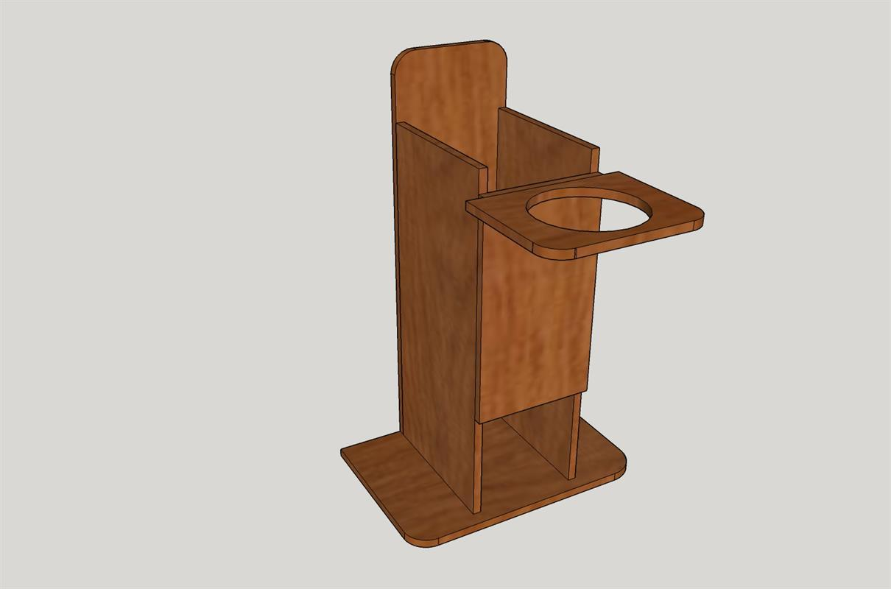
This bailey chair holds the dog upright and fulfills the required purpose. We thought that it would be best to create the bare essential first and then move into adding the additional features we wanted to see, particularly making it adjustable since we believe that could be difficult.
Our first design - the one I made - didn't use any parameters in Fusion. This was because I wanted to get it out as soon as possible and I had an hour and 30 minutes to start a print. I wanted to see where the print could malfunction and where there would be potential for complications. Our first prototype ended up looking like this;
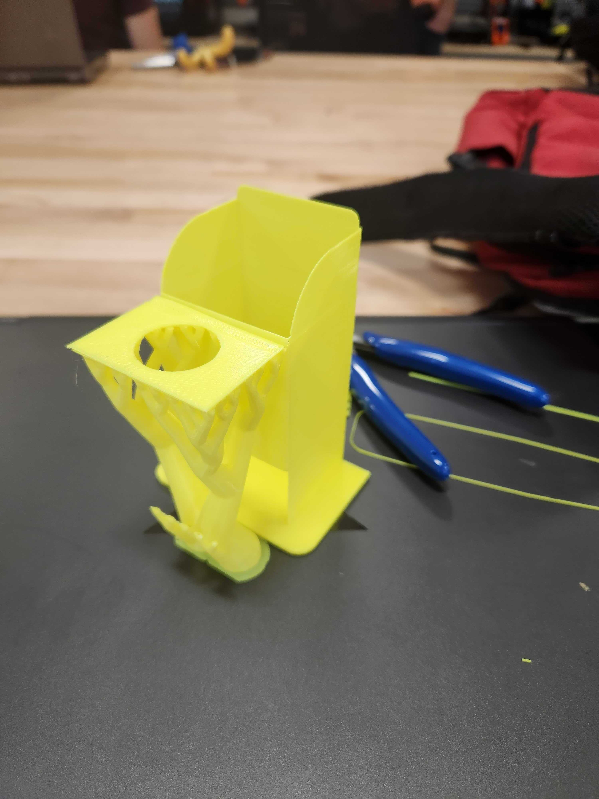
Several things were found in our first test. The most important one, and it's visible in the picture if you look closely, is that the dogbowl holder came off very easily. This led me to the conclusion that it needs extra support, particularly since a dog is going to be reaching into and bumping into it. I'm very glad I caught that in time, as it was the most glaring flaw. The second flaw was that the walls were extremely thin. This was due to the scaling down of thickness, something that would be avoided when laser cutting, which is our ultimate plan. Finally, the base was slightly coming off of the build plate due to being so thin, among other reasons, so we would want to account for that if we were to continue 3D printing. The testing methodology we would use is building smaller prototypes and identifying underlying problems, particularly if we were to scale it up. Building large prototypes would cost a lot of time and resources, so we would not be able to test using actual animals, not to mention potential safety concerns.
Our next design looked like this;
This chair was superglued together. It is, obviously, made out of laser-cut wood, which means that the parts are thicker. I also added some holders to the dog bowl portion to support it better. This design ended up looking a lot better than the previous design, and it definitely felt like we were approaching something of substance. From this example, we found that the side walls could potentially slightly shift. To counter this, we would likely add metal support brackets in the final product that can hold the chair together.
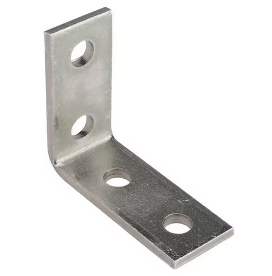
In the next attempt, Mark attempted to add in joints to hold the box together;
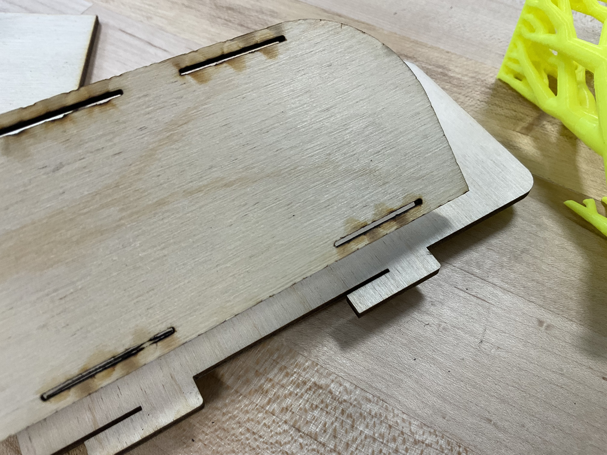
The finger joints were more of a proof of concept attempt, and they ended up not completely working, but some of them did stick. Mark later redid it and it ended up staying very upright. This attempt got us thinking about how we want to approach the assembly of the chair, and we ended up thinking that screws would likely be the best method. Here's what a fusion attempt of that looks like;
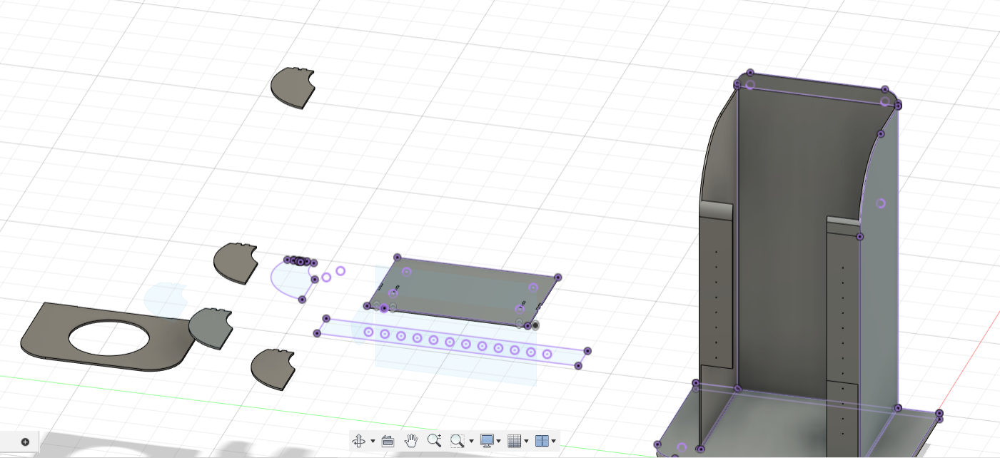
There's a couple of final notes to draw from this. The first is that, if you're looking at the main part, you can see that it has been broken down into to long "strips" or walls. This is to make the height of the chair adjustable; one would be able to screw in the front wall at the appropriate height and then attach the bowl holder. The other note is the amount of screw holes - we used 3mm diameter screws. Finally, the supports for the bowl holders are going to use a laser cut captive nut set up to hold the screws in better. It looks something like this;
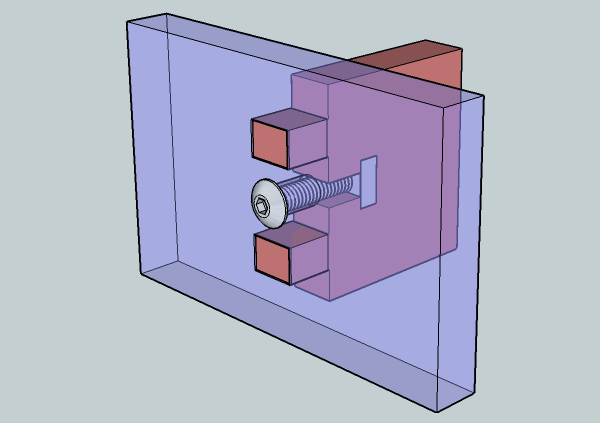
The step to making the chair adjustable made the biggest difference. It also required the most work and the most creative thinking since there aren't designs online for how to make it adjustable. The complete front of the design needed to be changed, and screws needed to be added. The design we learned the most from was the change from 3D printing to laser cut. It was where we could truly see how to work with our medium, which difficulties we'd need to address, and how we could make the pieces fit together. It was also a lot easier to imagine the laser cut being made larger than the 3D printed piece being made larger; the 3D printed prototype didn't feel very practical, and it was obvious that it'd have a lot of mistakes that we wouldn't need to address when changing mediums to laser cutting, such as the wall thickness changing when being scaled down.